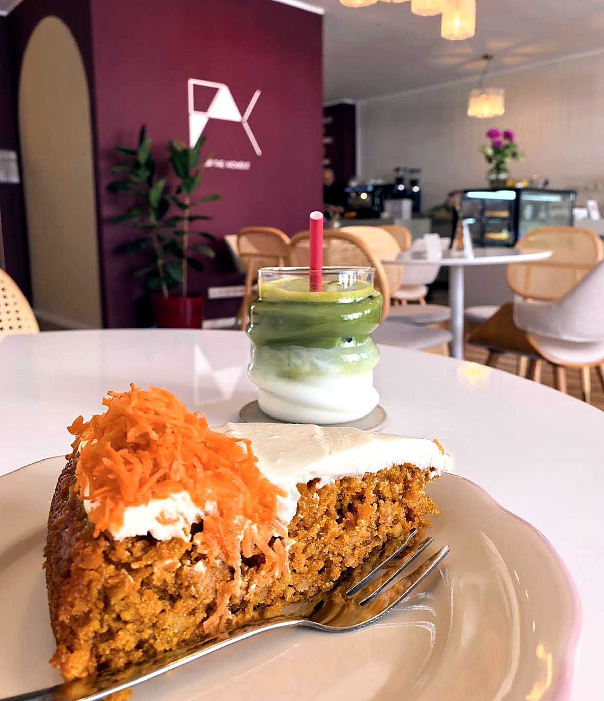
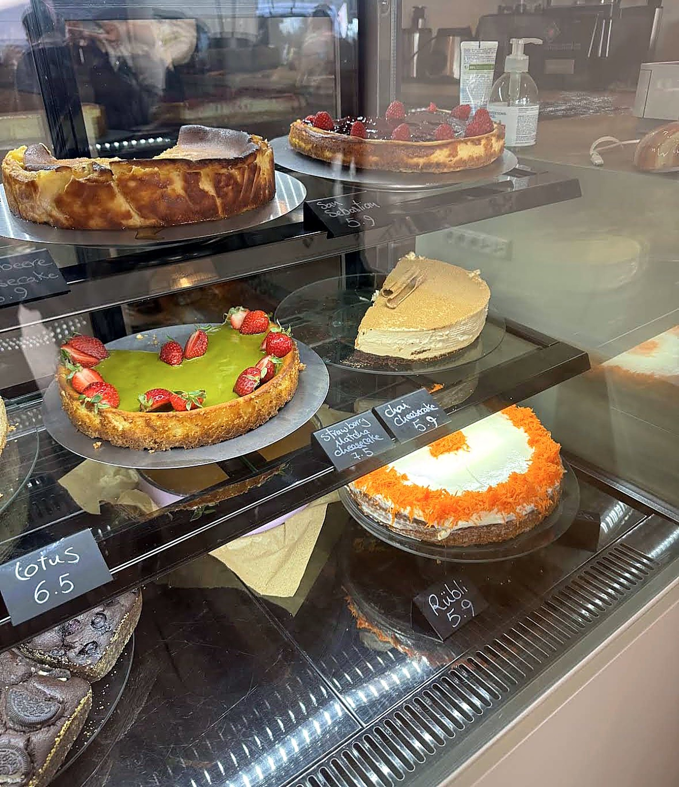
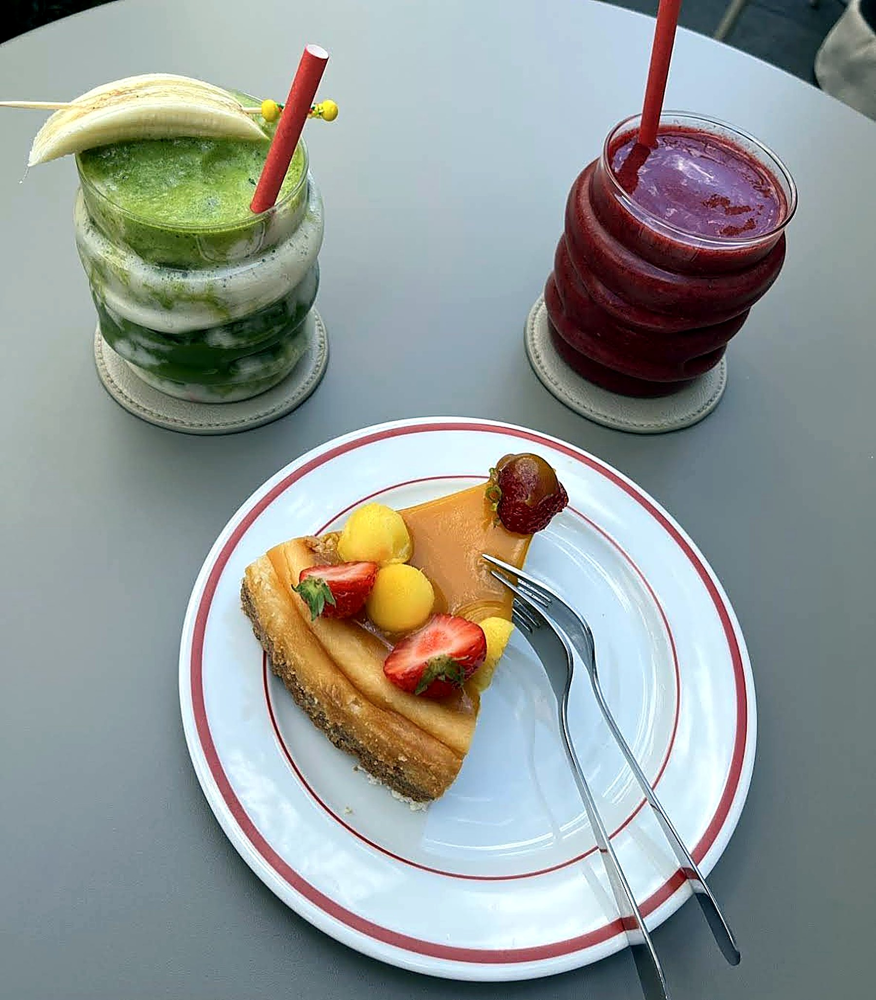
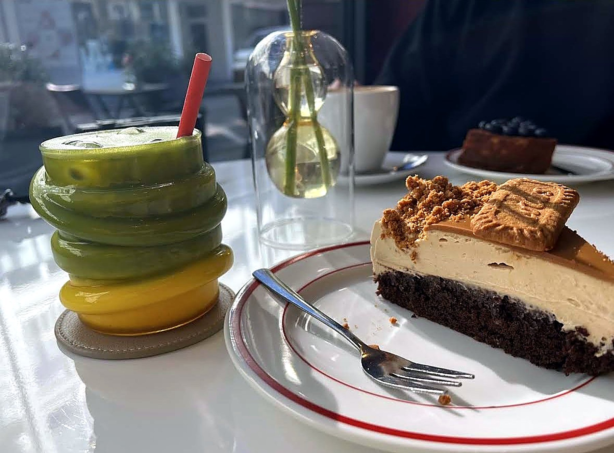
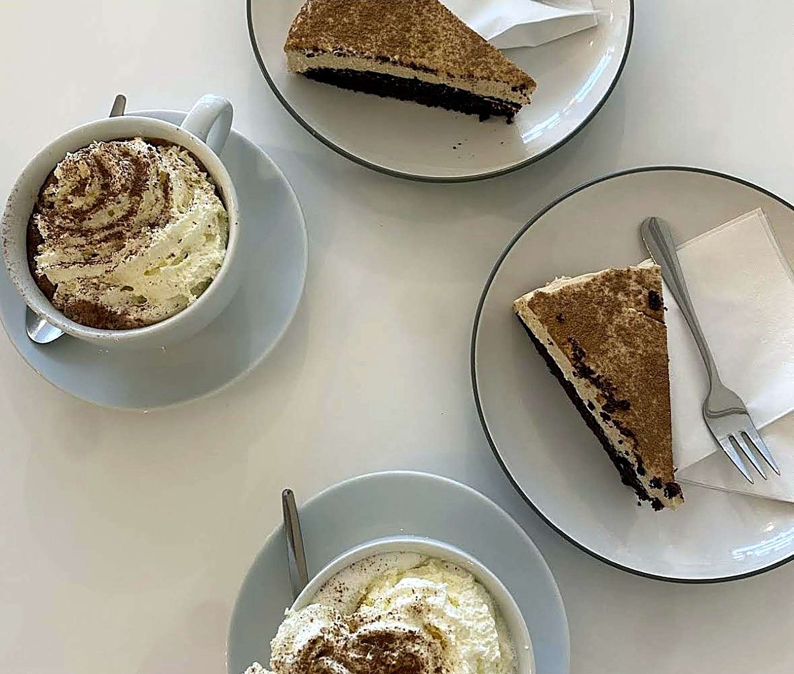
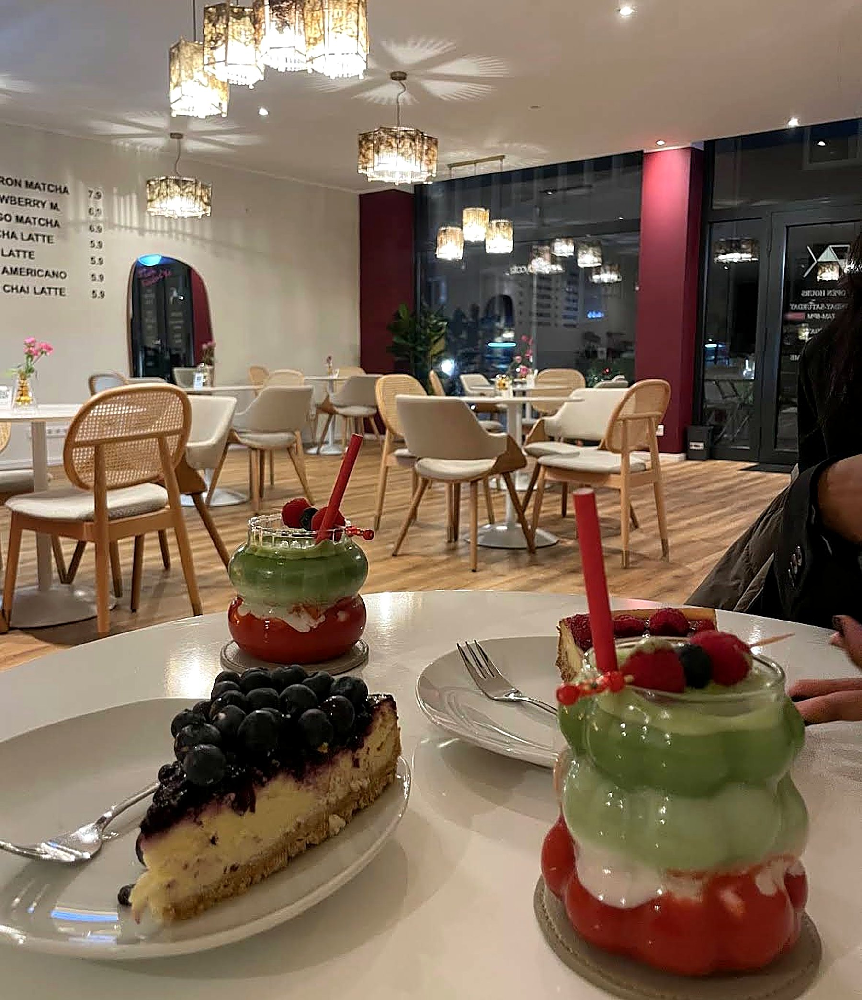

Jeden Tag frisch gebacken
Kuchen mit Liebe
Von Carrot Cake bis Chai-Cheesecake – täglich frisch, viele Sorten auch vegan.

Carrot Cake
Süße Handarbeit
Kuchen, wie hausgemacht.
Jeden Morgen entstehen unsere Kuchen neu – mit guten Zutaten und viel Liebe zum Detail. Die Auswahl in der Vitrine wechselt täglich, also frag am besten direkt, was heute frisch ist.
Viele Sorten gibt es auch in einer veganen Variante.
— frisch aus dem Ofen
Auf der Karte
Kuchen & Süßes
Impressionen
Süße Momente





Lust auf ein Stück?
Komm vorbei und schau, was heute frisch in der Vitrine liegt – wir freuen uns auf dich.